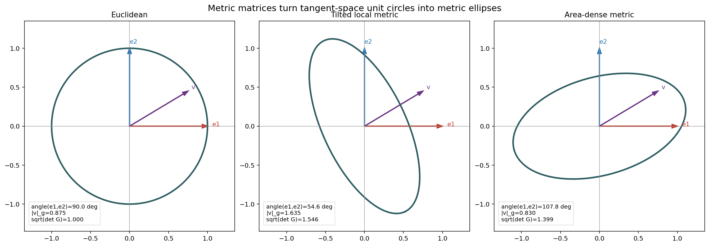
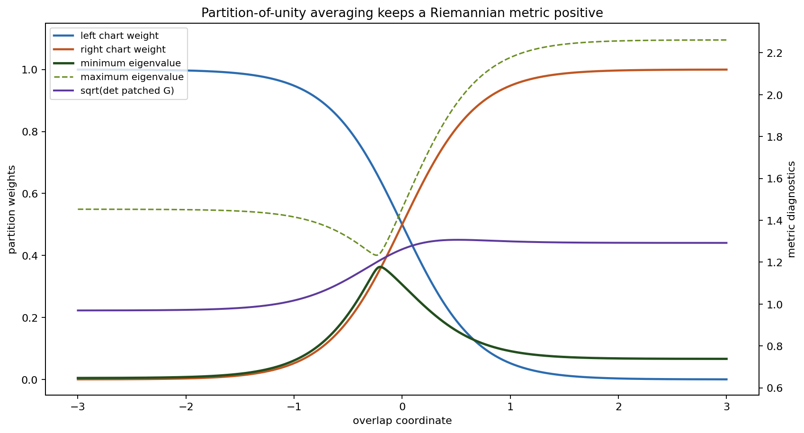
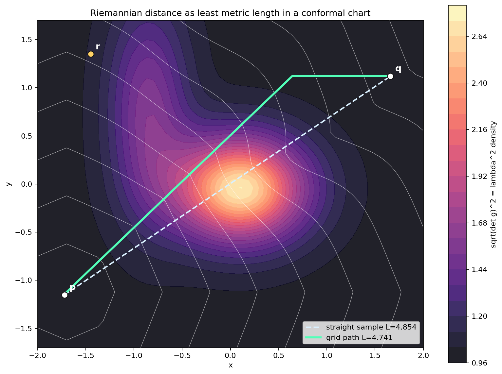
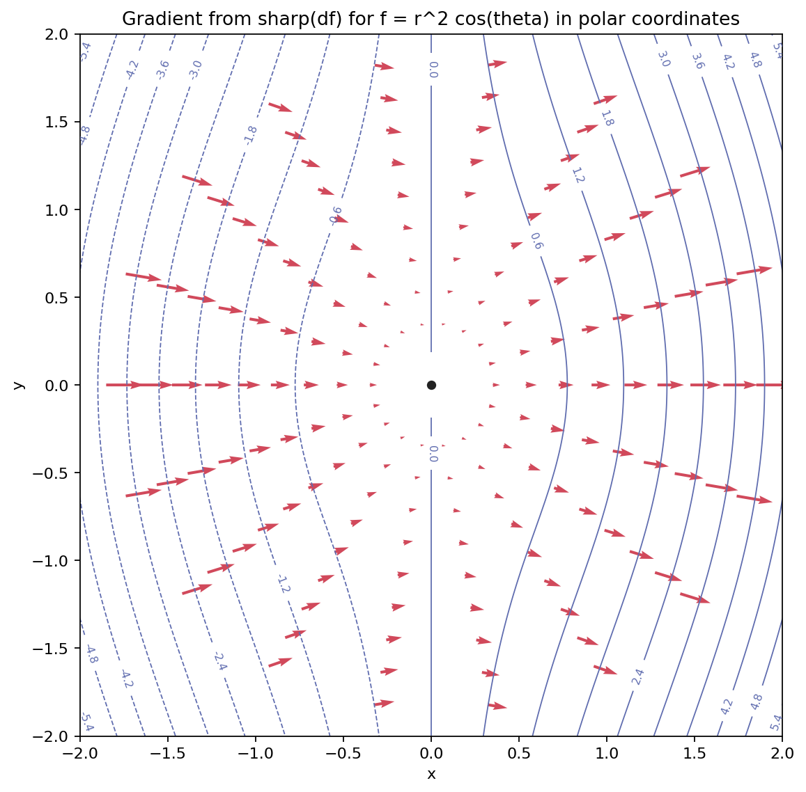
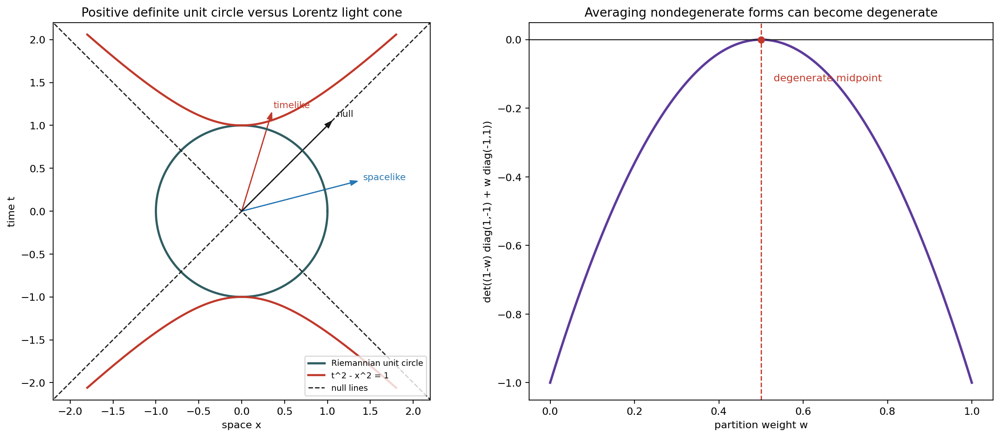

A Riemannian Metric Is Local Linear Algebra That Varies Smoothly
A Riemannian metric on a smooth manifold M is a smooth symmetric covariant 2-tensor field g whose value gp is positive definite on each tangent space TpM.
Read Lengths, Angles, And Density From The Metric Matrix

Why Partitions Of Unity Preserve Positivity
- Choose coordinate charts and put a Euclidean metric in each chart.
- Use a smooth partition of unity to weight the local metrics.
- At each point, at least one weight is positive and all weights are nonnegative.
- A positive weighted average of positive definite forms stays positive definite.
The notebook patch has nonnegative weights summing to one, minimum eigenvalue 0.647155, and minimum determinant 0.940313.

Pullback Metrics Are Gram Matrices Of Pushed-Forward Tangents
If F: M → N is smooth and g is Riemannian on N, then F*g is Riemannian exactly when F is an immersion.
The symbolic residual is zero and the sampled minimum eigenvalue is 1.0. The entry 1 + u2 measures the growing cost of moving in the helical direction.
Orthonormal Frames Are Easy; Flat Coordinates Are Special
The chapter's flatness criterion says that a metric is locally Euclidean exactly when one can find local coordinates whose coordinate frame is orthonormal.
An orthonormal frame need not be a coordinate frame. Curvature begins to appear when the best local measuring sticks cannot be integrated into Euclidean coordinates.
Distance Is The Infimum Of Metric Lengths
The distance between two points is the infimum of these lengths over piecewise smooth curves joining them.
The straight sample has length 4.854; the grid path has length 4.741 because it avoids the high-density region.
The sampled densities are positive, distances are positive, and the triangle slack in the check is 5.503.

The Metric Identifies Vectors And Covectors

Lowering an index multiplies by the metric matrix. Raising an index multiplies by the inverse metric.
The gradient is grad f = (df)sharp. In polar coordinates for the Euclidean metric, G = diag(1,r2), so the angular component receives the factor 1/r2.
What Breaks When Positivity Is Removed?
A pseudo-Riemannian metric is symmetric and nondegenerate with constant signature, but it is not required to be positive definite.
- Nonzero null vectors can have squared length zero.
- There is no Riemannian norm or angle theory built from positivity.
- The partition-of-unity proof does not transfer: positive averages of nondegenerate forms can become degenerate.
The Lorentz matrix determinant is -1, the sampled null vector has squared length 0, and the averaged Lorentz forms are degenerate at the midpoint.
